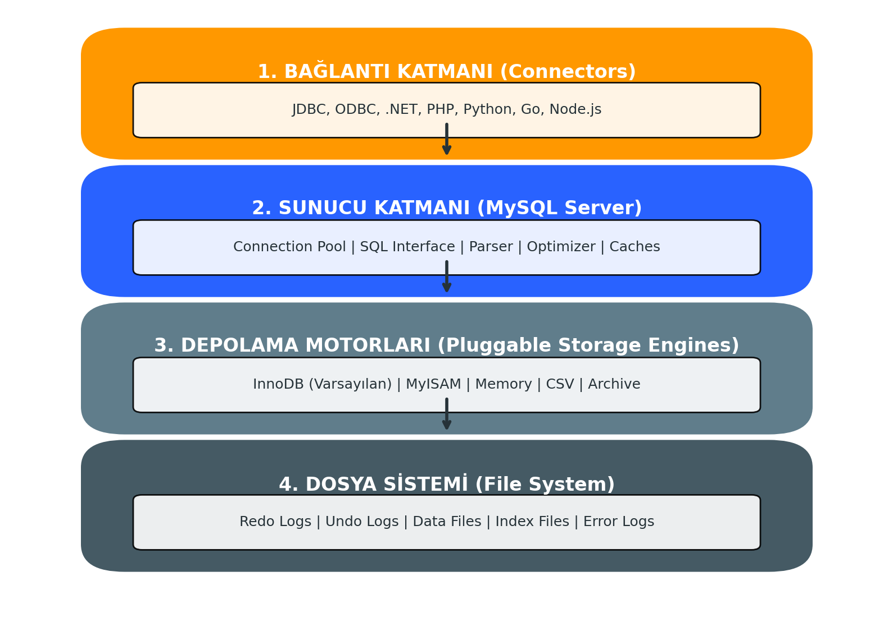
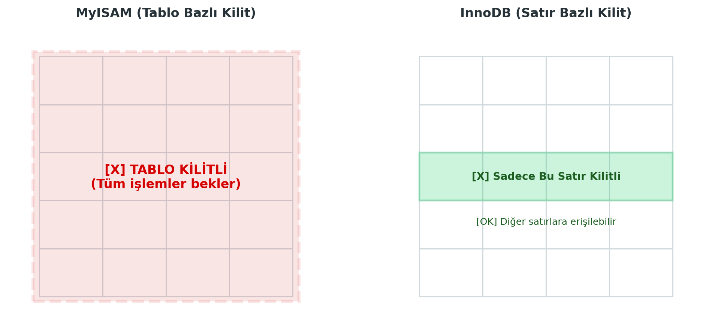

MySQL Mimarisi, Depolama Motorları ve Performans
Bu bölüm; MySQL'in çok katmanlı mimari yapısını, MyISAM ve InnoDB farklarını, İndeksleme ve View yapılarını kapsamaktadır.
1. MySQL Mimarisi

MySQL, Oracle Corporation tarafından desteklenen, açık kaynaklı ve ilişkisel bir veritabanı yönetim sistemidir (RDBMS).
Genel Özellikler
- İstemci-Sunucu Mimarisi: Bir sunucu (mysqld) veritabanını yönetir ve ağ üzerinden gelen istemci (client) isteklerini dinler.
- Çoklu İş Parçacıklı (Multithreaded): Aynı anda birden fazla isteği (query) işleyebilir. Her bağlantı kendi thread'i üzerinde çalışır.
- Çok Kullanıcılı Yapı: Farklı yetki seviyelerine sahip birden fazla kullanıcının eşzamanlı erişimine izin verir.
- Platform Bağımsız: Windows, Linux, macOS ve Unix sistemlerde çalışabilir.
Bağlantı ve Arayüz Araçları
- MySQL Workbench: Resmi görsel tasarım ve yönetim aracıdır. ER diyagramı çizme, sorgu yazma ve sunucu yönetimi işlemlerini tek bir arayüzden sunar.
- PHPMyAdmin: Web tabanlı yönetim aracıdır. Özellikle web sunucularında (Apache/Nginx) yaygın kullanılır.
- MySQL Connectors (Sürücüler): Uygulamaların veritabanı ile konuşmasını sağlar.
- ODBC (Open Database Connectivity): Genel amaçlı bağlantı standardı.
- JDBC (Java Database Connectivity): Java uygulamaları için.
- Komut Satırı (CLI):
mysql -u root -pkomutu ile doğrudan terminal üzerinden erişim sağlar.
2. Depolama Motorları (Storage Engines)
MySQL'in en güçlü özelliklerinden biri, farklı tablolar için farklı depolama motorlarını destekleyen "Pluggable Storage Engine" mimarisidir.
MyISAM
MySQL'in eski varsayılan motorudur (5.5 sürümü öncesi).
- Kilit Mekanizması: Tablo Bazlı Kilit (Table-Level Locking) kullanır. Bir yazma işlemi sırasında tüm tabloyu kilitler, bu da çok kullanıcılı yazma işlemlerinde performansı düşürür.
- Transaction: Desteklemez (Atomik değildir).
- Foreign Key: Desteklemez.
- Avantajı: Okuma ağırlıklı (Read-Heavy) sistemlerde ve Full-Text aramalarda çok hızlıdır.
InnoDB
MySQL'in modern varsayılan motorudur.
- Kilit Mekanizması: Satır Bazlı Kilit (Row-Level Locking) kullanır. Sadece işlem yapılan satırı kilitler, bu da eşzamanlılığı artırır.
- Transaction: Tam ACID (Atomicity, Consistency, Isolation, Durability) desteği sağlar.
COMMITveROLLBACKişlemleri yapılabilir. - Foreign Key: İlişkisel bütünlüğü (Referential Integrity) destekler.
- Avantajı: Veri bütünlüğünün kritik olduğu, yüksek işlem hacimli (OLTP) sistemler için idealdir.
MyISAM vs InnoDB Karşılaştırması

| Özellik | MyISAM | InnoDB |
|---|---|---|
| Transaction (ACID) | Yok | Var |
| Kilit Seviyesi | Tablo (Table) | Satır (Row) |
| Foreign Key (FK) | Yok | Var |
| Crash Recovery | Zayıf | Güçlü (Otomatik) |
| Disk Alanı | Az yer kaplar | Daha fazla yer kaplar |
| Kullanım Alanı | Loglama, Salt Okunur Veri | Bankacılık, E-Ticaret |
Sınav Bilgisi
Sınavda "Hangi durumda MyISAM, hangi durumda InnoDB seçilmelidir?" sorusu gelebilir.
Cevap: Veri bütünlüğü ve Transaction gerekiyorsa (Para transferi vb.) kesinlikle InnoDB; sadece log tutulacaksa veya çok hızlı okuma gerekiyorsa MyISAM.
3. Görünümler (Views)
View, fiziksel olarak veri tutmayan, ancak kaydedilmiş bir SELECT sorgusunun sonucunu bir tablo gibi sunan sanal yapıdır.
View Nedir ve Avantajları?
- Güvenlik: Kullanıcılara tablonun tamamı yerine sadece belirli sütunlarını veya satırlarını göstermek için kullanılır (Örn: Personel tablosundaki Maaş sütununu gizleyen bir View).
- Karmaşıklığı Gizleme: Karmaşık
JOINişlemlerini içeren sorguları tek bir View altına alarak, kullanıcının basit birSELECTile veriye ulaşmasını sağlar. - Depolama Avantajı: Veriyi fiziksel olarak kopyalamaz, sadece sorgu tanımını saklar.
View İşlemleri (SQL)
View Oluşturma:
CREATE VIEW IstanbulMusterileri AS
SELECT Ad, Soyad, Telefon
FROM Musteriler
WHERE Sehir = 'İstanbul';
View Kullanma:
SELECT * FROM IstanbulMusterileri;
View Güncelleme:
CREATE OR REPLACE VIEW IstanbulMusterileri AS
SELECT Ad, Soyad, Telefon, Email
FROM Musteriler
WHERE Sehir = 'İstanbul';
View Silme:
DROP VIEW IstanbulMusterileri;
4. İndeksler (Indexes)

İndeksler, veritabanı performans optimizasyonunun en temel taşıdır.
İndeks Nedir ve Neden Kullanılır?
Veritabanı indeksleri, bir kitaptaki "İçindekiler" veya arka sayfadaki "İndeks" bölümüne benzer. Aranan veriye, tüm satırları tek tek taramak (Full Table Scan) yerine, bir ağaç yapısı (B-Tree) üzerinden çok daha hızlı ulaşılmasını sağlar.
Performans Dengesi (Trade-off)
İndeksler okuma (SELECT) hızını muazzam derecede artırır. Ancak yazma (INSERT, UPDATE, DELETE) hızını düşürür. Çünkü her veri girişinde indeks yapısının da güncellenmesi ve yeniden sıralanması gerekir.
İndeks Türleri
- Tek Kolonlu İndeks: Sadece bir sütun üzerine kurulur.
- Benzersiz (Unique) İndeks: Sütundaki verilerin tekrarsız olmasını zorunlu kılar (Primary Key otomatik olarak Unique İndekstir).
- Bileşik (Composite) İndeks: Birden fazla sütunun kombinasyonu üzerine kurulur. (Örn: Hem
AdhemSoyadile arama yapılıyorsa).
Clustered vs Non-Clustered İndeks
- Clustered (Kümelenmiş) İndeks: Verinin disk üzerindeki fiziksel sıralamasını belirler. Bir tabloda sadece bir tane olabilir (Genellikle Primary Key). Sözlükteki kelimeler gibi, verinin kendisi sıralıdır.
- Non-Clustered (Kümelenmemiş) İndeks: Kitabın arkasındaki indeks gibidir. Mantıksal bir sıralama ve asıl veriye giden bir işaretçi (pointer) tutar. Bir tabloda birden fazla olabilir.
İndeks Yönetimi (SQL)
İndeks Oluşturma:
-- MusteriAdi sütununa indeks ekler
CREATE INDEX idx_musteri_adi ON Musteriler(MusteriAdi);
-- Benzersiz indeks ekler (E-posta tekrar edemez)
CREATE UNIQUE INDEX idx_email ON Personel(Email);
İndeksleri Listeleme:
SHOW INDEX FROM Musteriler;
İndeks Silme:
DROP INDEX idx_musteri_adi ON Musteriler;
5. Kısıtlayıcılar (Constraints)
Veri bütünlüğünü (Data Integrity) korumak için tablolara uygulanan kurallardır.
Temel Kısıtlayıcılar
- NOT NULL: Sütunun boş geçilemeyeceğini belirtir.
- UNIQUE: Sütundaki tüm değerlerin farklı olmasını sağlar.
- PRIMARY KEY: Satırı benzersiz tanımlar (NOT NULL + UNIQUE). İndeksleme yapar.
- FOREIGN KEY: Başka bir tablonun Primary Key'ine referans verir (İlişkisel bütünlük).
- CHECK: Verinin belirli bir şarta uymasını zorlar (Örn:
Yas > 18). - DEFAULT: Veri girilmezse varsayılan değer atar.
- AUTO_INCREMENT: Sayısal alanı otomatik artırır (Genellikle ID için).
ALTER TABLE ile Kısıtlayıcı Yönetimi
Tablo oluşturulduktan sonra kısıtlayıcı eklemek veya çıkarmak için ALTER TABLE kullanılır.
Primary Key Ekleme:
ALTER TABLE Ogrenciler
ADD PRIMARY KEY (OgrenciNo);
Foreign Key Ekleme:
ALTER TABLE Siparisler
ADD CONSTRAINT fk_musteri
FOREIGN KEY (MusteriID) REFERENCES Musteriler(MusteriID);
Constraint Silme:
-- MySQL'de PK silme
ALTER TABLE Ogrenciler DROP PRIMARY KEY;
-- MySQL'de FK silme (Önce constraint ismini bilmek gerekir)
ALTER TABLE Siparisler DROP FOREIGN KEY fk_musteri;